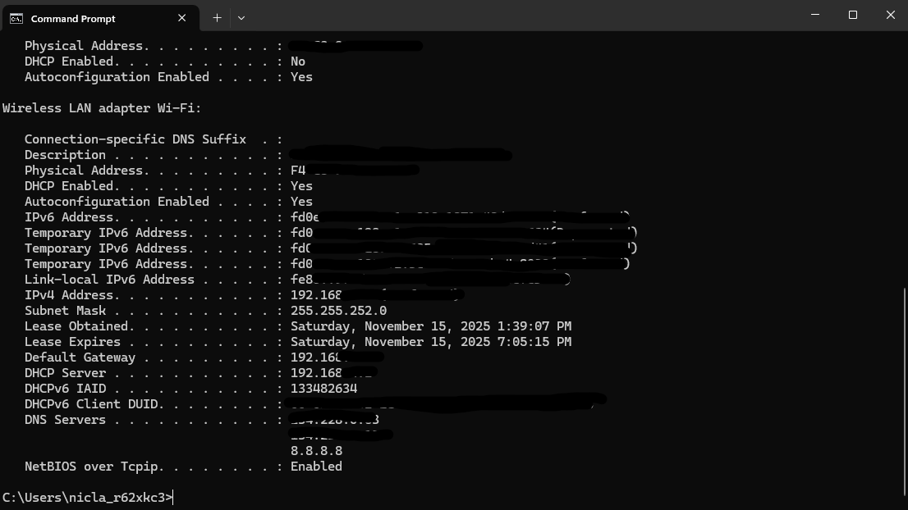

Core 1 220-1201 Networking
Study materials related to computer networks, network infrastructure, and troubleshooting.
Key Topics Covered: Network Protocols & Ports, TCP/IP Model, SOHO Networks, Network Devices & Tools, Wireless Standards, IP Addressing
Contents
OSI & TCP/IP Models
Understanding the OSI (Open Systems Interconnection) and TCP/IP models is fundamental to networking. These models describe how data is transmitted across networks.
OSI Model (7 Layers)
| Layer | Name | Function | Examples |
|---|---|---|---|
| 7 | Application | User applications & services | HTTP, HTTPS, SMTP, FTP, Telnet |
| 6 | Presentation | Data translation & encryption | SSL/TLS, JPEG, MPEG |
| 5 | Session | Session management | NetBIOS, RPC, PPTP |
| 4 | Transport | End-to-end communication | TCP, UDP, SCTP |
| 3 | Network | Routing & IP addressing | IP, ICMP, IGP |
| 2 | Data Link | MAC addressing & switching | Ethernet, PPP, Frame Relay |
| 1 | Physical | Physical transmission | Cables, Hubs, Repeaters |
TCP/IP Model (4-5 Layers)
The TCP/IP model is a more practical model used in modern networking.
| Layer | Name | Protocols |
|---|---|---|
| 4-5 | Application | HTTP, HTTPS, SMTP, FTP, DNS, DHCP, Telnet |
| 3 | Transport | TCP, UDP |
| 2 | Internet | IP, ICMP, IPsec |
| 1 | Link/Physical | Ethernet, PPP, ARP |
Network Protocols & Ports
Protocols define the rules and standards for communication between network devices such as how data is formatted, transmitted, and received. You can think of Protocols like it is the languages spoken through doorways. They set the rules that define how communication happens.
Ports are logical endpoints identifed by numbers (ex. HTTP is Port 80). They allow multiple devices to run simultaneously on a single IP address by directing traffic to the correct service. Ports are like doorways into a device. They have specific entry and exit points for data tied to services
Common Protocols & Ports
| Protocol | Port(s) | Layer | Purpose |
|---|---|---|---|
| HTTP | 80/TCP | Application | Unsecured web traffic |
| HTTPS | 443/TCP | Application | Secured web traffic (SSL/TLS) |
| FTP | 20, 21/TCP | Application | File transfer |
| SSH | 22/TCP | Application | Secure shell & remote access |
| Telnet | 23/TCP | Application | Unsecured remote access |
| SMTP | 25, 587/TCP | Application | Email sending |
| DNS | 53/UDP, TCP | Application | Domain name resolution |
| DHCP | 67, 68/UDP | Application | Dynamic IP assignment |
| POP3 | 110/TCP | Application | Email retrieval |
| IMAP | 143, 993/TCP | Application | Email access (secure) |
| RDP | 3389/TCP | Application | Remote desktop protocol |
Transmission Control Protocol (TCP)
TCP is one of the core transport layer protocols used for data transmission over IP networks. TCP ensures reliable delivery, ordered and error-checked of the data. TCP is Connection-oriented communication. It establishes a three-way handshake (SYN → SYN-ACK → ACK) before data transmission. This process ensures data integrity and order. Error Detection and Retransmission uses checksums and acknowledgement messages for reliable delivery. Also retransmits lost packets to prevent data corruption.
User Datagram Protocol (UDP)
UDP is another core transport layer protocol. Unlike TCP, UDP is connectionless and does not guarantee reliable delivery or ordered packets. UDP is faster and has lower overhead, making it suitable for real-time applications where speed is more critical than reliability.
| Feature | TCP (Transmission Control Protocol) | UDP (User Datagram Protocol) |
|---|---|---|
| Connection | Connection-oriented (3-way handshake) | Connectionless |
| Reliability | Guaranteed delivery, ordered packets | No guarantees (best effort) |
| Speed | Slower (overhead) | Faster (minimal overhead) |
| Ordering | Maintains packet order | No ordering guarantee |
| Use Cases | Email, File transfer, Web browsing | Video streaming, VoIP, Gaming |
Good Practices for Secure TCP/UDP
Firewall Configuration
Configure firewalls and access control lists to strictly filter TCP and UDP traffic.
Use Secure Protocols
Use HTTPS over HTTP, and SFTP over FTP, for secure, encrypted data transmission.
Regular Updates
Keep software and firmware updated to patch vulnerabilities.
Logging / Monitoring
Maintain detailed logs of TCP/UDP connections to detect abnormal traffic patterns. Monitor for suspicious behavior such as SYN floods on TCP or amplification attacks over UDP. Implement SYN flood protection for TCP and limit UDP request rates to prevent Dos/DDoS.
Strong Authentication
Use strong passwords and implement multi-factor authentication, digital certificates, or secure keys for services.
Encryption
Use TLS/SSL for TCP traffic (HTTPS, SMTPS, IMAPS) and Datagram TLS (DTLS) for UDP traffic to prevent eavesdropping.
Network Devices / Components
Network devices are hardware components or software components that enable communication and data flow within networks. Each device operates at different OSI layers.

Router
Connects multiple networks and routes data packets between them based on IP addresses. Operates at Layer 3 (Network).
- Key Function: IP routing & NAT
- SOHO Example: Wireless router at home
- Interfaces: WAN, LAN ports
Switch
Connects devices within a LAN and forwards frames based on MAC addresses. Operates at Layer 2 (Data Link).
- Key Function: MAC address learning & forwarding
- VLAN Support: Virtual LAN segmentation
- Ports: 4-48+ Ethernet ports
Firewall
Filters incoming/outgoing network traffic based on security rules. Can operate at Layer 3-7.
- Key Function: Packet filtering & protection
- SOHO: Often built into home routers
- Types: Stateful, proxy, next-gen
Modem
Modulates and demodulates digital signals for transmission over ISP lines. Converts WAN signal to network traffic.
- Types: Cable, DSL, Fiber
- Connection: Coax, phone line, or fiber
- Output: Ethernet to router
Access Point (AP)
Extends network range wirelessly. Connects to a wired network and broadcasts Wi-Fi signal.
- Key Function: Wireless coverage extension
- Standards: All 802.11 standards
- Setup: Often in bridge or AP mode
Repeater
Repeater: Amplifies signals to extend Wi-Fi range.
- Key Function: Signal boosting
- Placement: Midway between router and dead zone
- Limitations: May reduce bandwidth
SOHO Networking
Small Office/Home Office (SOHO) networks are small, cost-effective setups typically used in home or small business environments.
SOHO Network Characteristics
- Limited devices: 2-50 devices typically
- Shared internet: Single ISP connection shared via router
- Wireless: Wi-Fi for mobility and convenience
- Basic security: Router firewall + Wi-Fi encryption
- Automatic IP: DHCP for IP assignment
- Simple management: Minimal IT overhead
Typical SOHO Setup
Internet → Modem → Router → Devices
- ISP Line: Cable/DSL/Fiber to modem
- Modem: Converts ISP signal to Ethernet
- Router: Distributes internet to multiple devices
- Devices: Computers, phones, printers, smart home devices
SOHO Security Best Practices
- Change default credentials: Router admin username/password
- Enable WPA2/WPA3: Use strong Wi-Fi encryption (not WEP or WPA)
- Disable WPS: Wi-Fi Protected Setup has security vulnerabilities
- Update firmware: Keep router firmware current
- Enable firewall: Use built-in router firewall
- Guest network: Separate network for visitors
Wireless Networking
Wireless networking allows devices to connect without physical cables using radio frequencies. IEEE 802.11 standards define Wi-Fi specifications.
Wi-Fi Standards (802.11)
| Standard | Frequency | Max Speed | Range | Notes |
|---|---|---|---|---|
| 802.11b | 2.4 GHz | 11 Mbps | ~100m | Obsolete |
| 802.11g | 2.4 GHz | 54 Mbps | ~100m | Backward compatible with 802.11b |
| 802.11a | 5 GHz | 54 Mbps | ~50m | Less interference, shorter range |
| 802.11n | 2.4/5 GHz | 600 Mbps | ~100m | MIMO technology, dual-band |
| 802.11ac | 5 GHz | 1.3 Gbps | ~50m | Very High Throughput (VHT) |
| 802.11ax (Wi-Fi 6) | 2.4/5 GHz | 10 Gbps | ~30m | OFDMA, latest standard |
| 802.11be (Wi-Fi 7) | 2.4/5/6 GHz | 30 Gbps+ | ~30m | Upcoming standard, enhanced features |
Wi-Fi Security Protocols
| Security Type | Strength | Status | Notes |
|---|---|---|---|
| Open (None) | None | ❌ Not recommended | No encryption, anyone can connect |
| WEP | Very Weak | ❌ Deprecated | Easily cracked, do not use |
| WPA | Weak | ⚠️ Legacy | Improvement over WEP but outdated |
| WPA2 (802.11i) | Strong | ✅ Current standard | AES encryption, widely supported |
| WPA3 | Very Strong | ✅ Latest standard | Enhanced security, protection against brute-force |
Key Wireless Concepts
- SSID: Service Set Identifier - the network name broadcast by AP
- Channel: 2.4 GHz has channels 1-13 (1, 6, 11 are non-overlapping)
- Frequency bands: 2.4 GHz (longer range, more interference) vs 5 GHz (shorter range, less interference)
- MIMO: Multiple-Input Multiple-Output - uses multiple antennas for better throughput
- Site survey: Process of analyzing wireless coverage and interference
IP Addressing & Subnetting
IP addressing is how devices identify and communicate with each other on networks. Understanding IPv4, IPv6, and subnetting is essential for networking.
IPv4 Addressing
Format: Four octets (0-255) separated by dots. Example: 192.168.1.1
| Class | Range | Private Range | Default Subnet Mask | Hosts |
|---|---|---|---|---|
| Class A | 1-126.x.x.x | 10.0.0.0 - 10.255.255.255 | 255.0.0.0 | 16.7 million |
| Class B | 128-191.x.x.x | 172.16.0.0 - 172.31.255.255 | 255.255.0.0 | 65,534 |
| Class C | 192-223.x.x.x | 192.168.0.0 - 192.168.255.255 | 255.255.255.0 | 254 |
| Class D | 224-239.x.x.x | N/A | N/A | Multicast |
| Class E | 240-255.x.x.x | N/A | N/A | Reserved |
IPv6 Addressing
Format: Eight groups of hexadecimal numbers separated by colons. Example: 2001:0db8:85a3:0000:0000:8a2e:0370:7334
- Length: 128 bits (vs IPv4's 32 bits)
- Advantages: Vastly larger address space, built-in security (IPsec)
- Shorthand: Can omit leading zeros and consecutive zero groups (::)
- Link-local: fe80:: prefix for automatic local addresses
DHCP & DNS
- Automatically assigns IP addresses to devices on a network
- Process: DISCOVER → OFFER → REQUEST → ACK
- Uses ports 67 (server) and 68 (client)
- Includes lease time (how long address is valid)
- Also provides subnet mask, gateway, and DNS server addresses
- Translates domain names to IP addresses
- Uses port 53 (TCP and UDP)
- Record types: A (IPv4), AAAA (IPv6), MX (mail), CNAME (alias), TXT (text)
- Recursive resolution through root, TLD, and authoritative nameservers
- Common public DNS: 8.8.8.8 (Google), 1.1.1.1 (Cloudflare)
Networking Tools & Troubleshooting
Network administrators use various physical tools, command-line and graphical tools to diagnose network issues and verify connectivity.
Essential Networking Tools
Crimper
Attaches modular connectors such as RJ45, or RJ11 to the ends of phone or network cables
Punchdown Tool
Inserts and cuts wires into insulation-displacement connectors on patch panels, keystone jacks, and punchdown blocks
Tone Generator and Probe Kit
The Tone Generator sends an analog signal or an electrical tone then the probe kit detects the tone with a tone, allowing technicians to trace and identify cables within a bundle or wall.
Loopback Adapter
A device that connects the transmit and receive pins of a network interface to test the functionality of the network hardware.
Multimeter
An electronic measuring instrument that combines several measurement functions in one unit. Measures voltage, current, resistance and cable continunity.
Wi-Fi Analyzer
A software application or a dedicated hardware device that scans the surrounding wireless spectrum to provide detailed information about WiFi networks and help troubleshoot connectivity issues. Can help identifiy overlapping channels or rogue access points.
Essential Windows Networking Commands
Purpose: Display network configuration
Shows: IP address, subnet mask, gateway, DNS servers, MAC address, DHCP Server for all network interfaces on that specific device. (Ex. Your desktop computer has an ethernet interface and a built in network interface card on the motherboard).
Purpose: Test connectivity to a device
ping -t google.com (continuous)
Uses: ICMP Protocol (Internet Control Message Protocol); checks if host is reachable and records response time
-
Key Elements
-
Reply from...
confirms if the target is reachable.
-
bytes
The size of the data packet sent to target. (Windows default is 32 bytes)
-
time
The roundtrip time in milliseconds (ms). Lower vaules indicate a faster connection and less latency.
-
TTL
Time to live A vaule that tells network routers how long a packet should exist on the network before being discarded, which prevents infinite loops. The default value can indicate the target's operating sytem.
-
Packets: Sent = 4, Received = 4, Lost = 0 (0% Loss)
Indicates that all packets successfully made the round trip, confirming a stable connection.
Purpose: shows you each hop your packet takes from your computer to a destination (like google.com). It is extremely useful for troubleshooting slow connections, routing issues, VPN problems, ISP issues, and more.
How it works: The mechanism relies on the Time-To-Live (TTL) value in the IP packet header. Tracert sends the first packet with a TTL of 1. The first router decrements the TTL to 0 and, as per standard protocol. Once TTL reaches 0 the router sends an "ICMP Time Exceeded" message back to your computer. Your computer then sends a second packet with a TTL of 2, which reaches the second router before expiring and sending back an "ICMP Time Exceeded" message. This process repeats, incrementing the TTL by one with each transmission, until the packet reaches its final destination or the maximum number of hops (30 by default) is met. The destination host then sends an "ICMP Echo Reply".
Step by Step:
-
First Packet → TTL = 1
- Router 1 receives it → TTL becomes 0 → Router 1 replies with "Time Exceeded".
- tracert shows Hop #1
-
Second Packet → TTL = 2
- Packet goes through Hop #1 → Hop #2 → TTL becomes 0 → Router 2 replies with "Time Exceeded".
- tracert shows Hop #2
-
Third Packet → TTL = 3
- Packet goes through Hop #1 → Hop #2 → Hop #3 → TTL becomes 0 → Router 3 replies with "Time Exceedd".
- tracert records Hop #3
This process continues until
- The destination responds
- A timeout occurs
- The TTL reaches 30 hops (default max)
Key Elements
-
Hop Number - represents the order of routers you reached. You will get 3 values which measure latency like
1 22 ms 21 ms 20 msThese 3 values will
- Helps detect jitter (Latency variation)
- Helps detect intermittent packet loss
- Helps confirm consisten routing
Purpose: Query DNS servers
nslookup google.com 8.8.8.8 (query specific DNS server)
Shows: IP address for domain name, helps diagnose DNS issues
Purpose: Display network statistics and active connections
netstat -b (connections with process names)
Shows: Listening ports, established connections, statistics
Purpose: Display MAC address
getmac /s computername (remote computer)
Shows: Physical address of network adapter
Purpose: Release and renew DHCP lease
ipconfig /renew (requests new IP from DHCP)
Uses: Fixing IP configuration issues, forcing new DHCP assignment
Purpose: View and manage ARP cache (IP to MAC mapping)
arp -d (clear ARP cache)
Uses: Troubleshooting MAC address issues, ARP spoofing detection
Network Troubleshooting Checklist
- 1. Check Physical Connection: Ensure cables are connected, lights on device/NIC
- 2. Verify IP Configuration: Run ipconfig to check for valid IP address
- 3. Test Local Connectivity: Ping default gateway (router)
- 4. Test Remote Connectivity: Ping external IP (8.8.8.8)
- 5. Check DNS Resolution: Use nslookup to verify DNS is working
- 6. Trace Route Issues: Use tracert to identify where connection fails
- 7. Check Firewall Rules: Verify firewall isn't blocking traffic
- 8. Check Device Drivers: Update network adapter drivers if needed